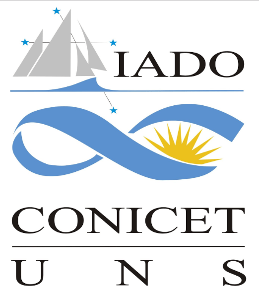
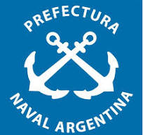
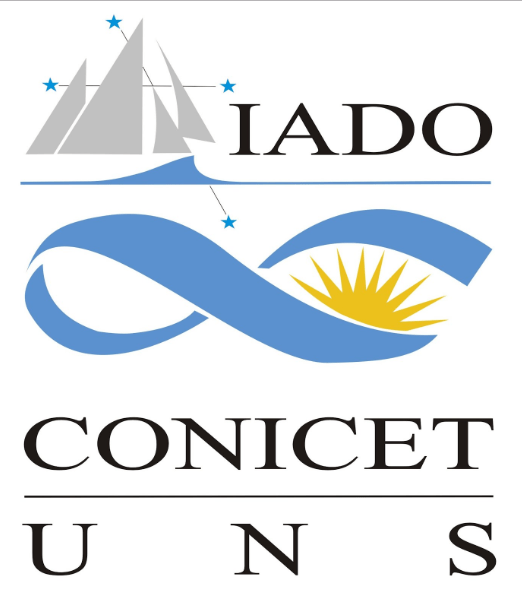
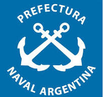

Calidad de Fondo


Geología submarina del Golfo Norpatagónico San Matías [2017]
Middle slope contourite deposits and associated sedimentary facies off NE Argentina [2011]
The Marine Environment: Hazards, Resources and the Application of Geoethics Principles [2018]
The contourite drifts over the Ewing Terrace (NE Argentina,SW Atlantic) [2010]
Evolución holocena de la llanura costera del margen sur del Río de la Plata [2002]
Evolución y cambios ambientales de la llanura costera de la cabecera del río de la Plata. [2005]
Seafloor response to flow in a southern hemisphere sand-ridge field: Argentine inner shelf [1982]
Sea-level fluctuations during the last 8600 years in the de la Plata river (Argentina) [2004]
Un tsunami no reconocido en Mar del Plata [2018]
Estratigrafía del Holoceno de la Llanura Costera del Margen Sur del Río de la Plata [1996]
Tweets by SHN_ArgentinaPersonal científico del Departamento de Oceanografía del SHN participó de la XVIII Reunión Argentina de Sedimentología, IX Congreso Latinoamericano de Sedimentología
— Servicio de Hidrografía Naval (@SHN_Argentina) September 28, 2023
que se llevó a cabo en la ciudad de La Plata entre el 19 y 22 de septiembre. pic.twitter.com/cLm01oxdpy
 





Grupo GEOMARGEN
4° Piso, Av. Montes de Oca 2124
C1270ABV, CABA
División de Geología y Geofísica Marina
Departamento de Oceanografía
Servicio de Hidrografía Naval
+54 11 4301-0061
geomargen@gmail.com